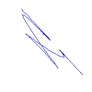

Return
to the pictures of curves with a flat flex.
Return
to the pictures of curves with a flat flex.
A Curve With a Flat Flex and Moving Cusps
Here is a motion picture of a curve with a flat
flex and three cusps, as two of the cusps approach each other, forming
a box point in the limit.
It is rotated with respect to the static original seen on the previous page.

The picture is linked to a much larger (700 KB) file containing a longer
version of the same movie.